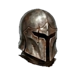
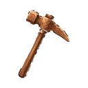
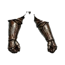
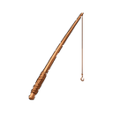
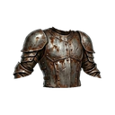
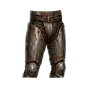
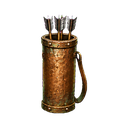
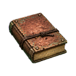

Whispering Forest
Hunting groundT1Lv 1-5
Creatures
EXP and gold for defeating one creature. The EXP you actually receive also depends on your level and your bonuses; the creature's card in the game shows your own amount.
| Creature | Level | Base EXP | Gold reward | Drops |
|---|---|---|---|---|
| Slimy Blob | Lv 1 | 170 | 1 |  Copper Helmet T1 Copper Pickaxe T1 Upgrade Stone T1 Upgrade Stone T1 |
| Forest Rat | Lv 2 | 271 | 2 |  Copper Gloves T1 Copper Sickle T1Upgrade Stone T1 |
| Wild Bat | Lv 3 | 439 | 3 |  Copper Boots T1 Copper Boots T1  Copper Rod T1Upgrade Stone T1 |
| Goblin Scout | Lv 4 | 690 | 4 |  Copper Chest T1Upgrade Stone T1 |
| Alpha Wolf | Lv 5 | 1,220 | 5 |  Copper Pants T1 Copper Quiver T1 Copper Shield T1 Copper Shield T1  Copper Tome T1Upgrade Stone T1  Copper Bow T1 Copper Bow T1  Copper Mace T1 Copper Mace T1  Copper Staff T1 Copper Staff T1  Copper Sword T1 Copper Sword T1 |
Gathering
Gathering gives profession EXP instead of character EXP.